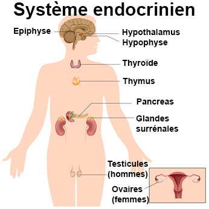

L'hypothalamus
Definitions : les glandes et les hormonesDefinitions : Les glandes et les hormones
Les glandes
Une glande est un amas de cellules secretant une ou plusieurs hormones et formant un tissu macro et ou microscopique.
Les hormones
L'hormone est une substance e action physiologique specifique secretee par une glande endocrine, et qui apres avoir ete vehiculee par le sang, va exercer un effet determine en d’autres points du corps, sur un organe cible.
L'hypothalamus est le cerveau endocrinien de l'organisme puisqu'il commande la secretion de toutes les glandes endocrines du corps. La fonction de l'hypophyse est sous la dependance de l'hypothalamus.
L'hypothalamus synthetise et libere des hormones qui sont emmagasinees et liberees par la neurohypophyse.

Connexions hypothalamo-hypophysaires
L'hypothalamus reagit de faeon hormonale avec l'antehypophyse par un retrocontrele.
Les liaisons avec l'antehypophyse sont mixtes : neuro-vasculaires.
Les liaisons avec la posthypophyse sont nerveuses pures.
Voir aussi :
|
Accueil
| Sciences infirmieres |
Soins et techniques
|
Pharmacologie et Therapeutiques
|
Examens
biologiques |
Examens medicaux
| Version imprimable e Samir ISP tous droits reserves design : xgraphik.com modifie par M. Pitte |
 haut
de page
haut
de page